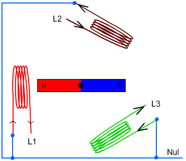
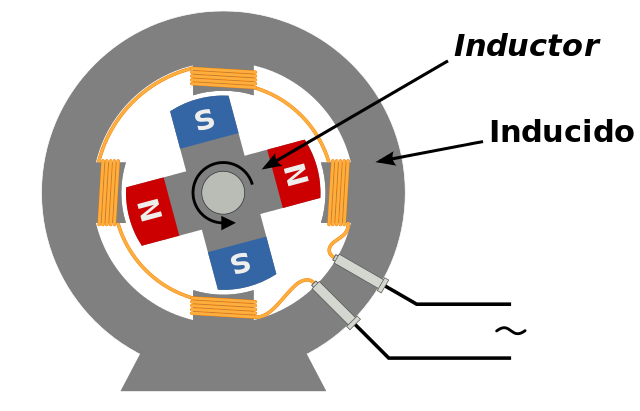
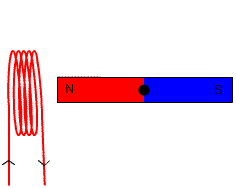
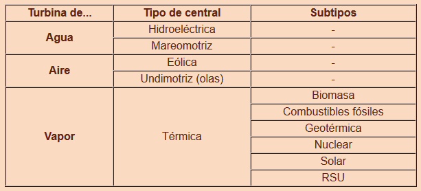

Imanes en movimiento
Cuando movemos un campo magnético cerca de un conductor eléctrico se observa que, en este conductor, se produce una corriente eléctrica. Es un fenómeno natural conocido como inducción electromagnética.
La cuestión es de dónde sacamos la energía cinética para girar los imanes que generan el campo magnético: una manivela, una turbina o simplemente la rueda de una bicicleta.
Para saber más sobre este fenómeno electromagnético mira este vídeo de Física Nova.
Sistema turbina-alternador
El sistema turbina-alternador consiste básicamente en una turbina que aprovecha el flujo de aire, agua o vapor para girar y transmitir este giro al rotor de un alternador. En las siguientes puedes observar el esquema de alternadores trifásico (tres líneas, el más utilizado), bifásico y monofásico:
|
 |
 |
 |
|
Alternador trifásico (esquema) |
Alternador bifásico (sección) |
Alternador monofásico elemental |
| Todas las imágenes ( 1, 2, 3 ) en Wikimedia Commons bajo Dominio públco | ||
Clasificación
En la tabla adjunta aparece una clasificación de los distintos tipos de centrales eléctricas que utilizan turbinas para mover alternadores.

Elaboración propia